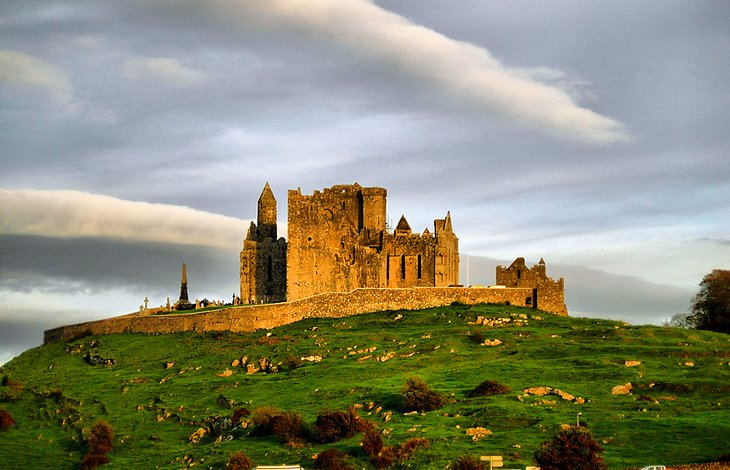

WHAT WE HAVE TO OFFER

Uluru-Kata Tjuta National Park
Deep in the heart of Australia's Red Centre, Uluru (formerly Ayers Rock), is one of the most photographed natural wonders in the country. The striking red monolith forms the centerpiece of Uluru-Kata Tjuta National Park, a World Heritage Area jointly managed by Parks Australia and the traditional landowners, the Aṉangu people. Uluru, meaning "shadowy place" in the local aboriginal dialect, rises to a height of 348 meters from the surrounding plain, with most of its bulk hidden beneath the earth's surface. Also in the park are the red dome-shaped rocks called Kata Tjuta (the Olgas). As the sun dips in the sky, sightseers gather to watch the colors of Uluru and Kata Tjuta transform in the shifting light. A great way to appreciate these sacred sites is to join a tour led by Aboriginal guides and rangers.

Blue Mountains National Park
A UNESCO World Heritage Site, beautiful Blue Mountains National Park lies 81 kilometers west of Sydney and is a popular day trip from the city. Named for the blue haze emanating from the many eucalyptus trees, this stunning park protects more than 664,000 acres of wilderness and encompasses dramatic gorges, waterfalls, aboriginal rock paintings, and 140 kilometers of hiking trails. The most famous attractions in the park are the towering sandstone rock formations called the Three Sisters. Other highlights include the Katoomba Scenic Railway, the world's steepest, which whisks passengers down the Jamison Valley through a cliff-side tunnel into an ancient rainforest, and the Skyway, Scenic Cableway, and Scenic Walkway, which all offer elevated views of the dense forests. Hiking, abseiling, rock climbing, mountain biking, and horseback riding are all popular things to do in the park.

Daintree National Park
A Wet Tropics World Heritage Area, Daintree National Park in Far North Queensland is among the most ancient ecosystems on Earth. The area belongs to the Eastern Kuku Yalanji Aboriginal people, and many of its natural features hold great spiritual significance. The park encompasses two main sections: Mossman Gorge, where crystal clear waters gush over granite boulders, and Cape Tribulation, one of the most beautiful places to visit in Australia, where rainforest meets reef along the white sandy beaches of the Coral Sea. This stunning stretch of coast is one of the few places in the world where two of the planet's richest ecosystems converge. The park's astounding biodiversity includes more than 18,000 plant species and a vast array of animal species, including the cassowary, crocodile, giant blue Ulysses butterfly, and the secretive Bennett's tree kangaroo. The resort town of Port Douglas, just south of the park, is a great base to arrange wilderness safaris into the park.
Fraser Island
World Heritage-listed Fraser Island, between Bundaberg and Brisbane off Australia's east coast,
is the largest sand island in the world and one of Australia's top outdoor adventures - especially for
four-wheel drive enthusiasts. Along windswept Seventy Five Mile Beach, you can see the rusted hulls of
shipwrecks, the colored sandstone cliffs of The Cathedrals, and the bubbling fish-filled rock pools called
Champagne Pools.
Venturing inland, highlights include crystal-clear freshwater creeks and lakes, some fed by springs, others
perched amid towering sand dunes, and ancient rainforests filled with an amazing diversity of plants and animals.
Sharks, dolphins, and whales prowl the waters, and the island's fauna includes wild horses, dingoes, bats, sugar gliders,
and more than 300 species of birds. Access to Fraser Island is by ferry from Rainbow Beach and Hervey Bay. Four-wheel
drive vehicles are essential as the island has no sealed roads.

Kakadu National Park
Kakadu National Park, in the Top End or the Northern Territory, is a World Heritage Site and one of the planet's great wilderness areas. Covering more than 19,840 square kilometers, Kakadu is the largest national park in Australia and the second largest in the world. Within its borders lie monsoon rainforests, mangrove swamps, rivers, gorges, ancient rock paintings, wetlands, and waterfalls, as well as an astounding diversity of wildlife. In addition to the many mammals, reptiles, and fish, more than 300 different species of birds make their home here, and both freshwater and saltwater crocodiles lurk in the wetlands. You can explore the park's diverse ecosystems by car, air, boat, or on foot via the vast network of hiking trails. Note that during the wet season (Nov-April), many roads and attractions close due to heavy flooding.

Cliffs of Moher
So many superlatives have been used to describe these magnificent cliffs it's hard to find the right words. Vertigo-inducing and awe-inspiring spring to mind and they are indeed both of these things as well as being utterly wild and ruggedly beautiful. For those who've read up on the Emerald Isle prior to visiting, the cliffs will be familiar, starring as they do in countless postcards and guidebooks. Yet no image can ever do them justice. This is Ireland's most visited natural attraction and with good reason. About one and a half hours by car from Galway, in neighbouring County Clare, the cliffs are visited by close to a million people from across the globe each year. They stretch for eight kilometers along the Atlantic and rise some 214 meters at their highest point. Take a walk along the trail to experience the raw power of nature at its most majestic.
The Ring of Kerry
If in Kerry, take the time to explore what is arguably Ireland's most scenic route, the Ring of Kerry (Iveragh Peninsula). Of course you can start anywhere along the way, however most set out from either Kenmare or Killarney ending, naturally enough, back in the same spot. The entire journey non-stop could take under three hours, but that's unlikely to happen. En-route there's a feast of jaw-dropping Atlantic Ocean views, stunning islands to visit, wild sweeping mountains, and many picturesque villages. This area of astounding natural beauty boasts a range of outdoor pursuits including golf, water sports on pristine beaches, cycling, walking, horse-riding, and terrific freshwater fishing and deep-sea angling. For history enthusiasts, there are Ogham Stones, Iron Age forts, and ancient monasteries, all set against a canvas of striking landscapes.

The Rock of Cashel
Ireland's most visited heritage site, the Rock of Cashel, stars in countless images of the Emerald Isle. Queen Elizabeth II of Great Britain even visited by helicopter during her 2011 official tour of the country. Perched upon a limestone rock formation in the Golden Vale, this magnificent group of Medieval buildings includes the High Cross and Romanesque Chapel, the 12th-century round tower, a 15th-century castle, and a 13th-century Gothic cathedral. The restored Hall of the Vicars Choral is also among the structures. Tourist attractions include an audio-visual show and exhibitions. It's also said that this was once the seat of the High Kings of Munster prior to the Norman invasions.
Blarney Castle and the Blarney Stone
Possibly Ireland's best-known attraction, the Blarney Stone sits high on a tower of Blarney castle, not far from Cork. Reputed to endow the famed Irish eloquence to those who dare hang their head over the parapets to kiss it, the stone is not the only reason for visiting Blarney Castle. It was built more than 600 years ago by Irish chieftain Cormac McCarthy, and you can tour the massive stone building from its towers to its dungeons. Extensive gardens surround it, filled with stone features and secret corners. Blarney Woollen Mills is known for its sweaters and other knitwear and has a shop selling crystal, porcelain, and other Irish gifts.